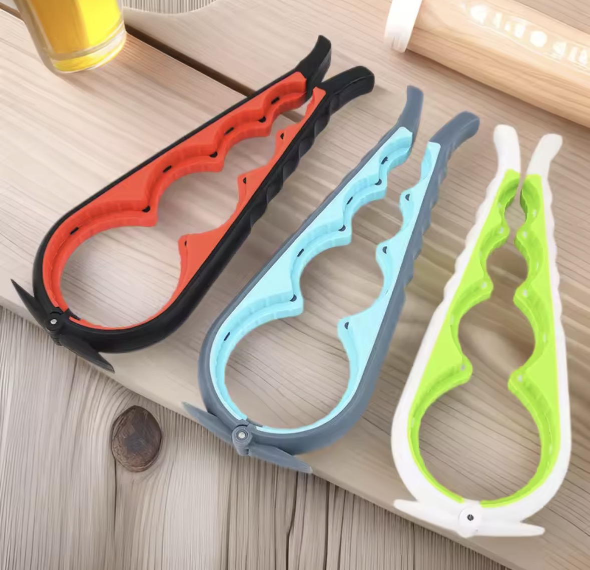

One motion, no wrist twisting — works on stuck lids without brute force.

Stuck lids are one of those small daily frustrations that get harder with age, especially for anyone dealing with arthritis or reduced grip strength. This design wraps around the lid and multiplies hand strength through leverage, rather than relying on a tight twisting grip.
Line the jaw up close to the base of the lid, not the very top edge, for the strongest grip.